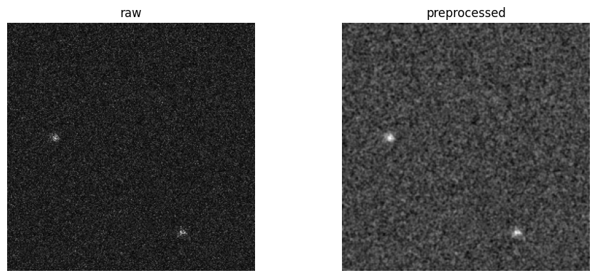

The problem
Fiducial tags give an underwater robot fixed landmarks to localize against, but in turbid water the cameras see almost nothing while the sonar still returns a picture. This project learns a mapping from sonar returns to vision-style features, so an AcTag fiducial detector keeps working when murky water blinds the cameras.
How it works
- Preprocess. OpenCV and NumPy clean up each sonar frame and propose candidate tag regions.
- Translate. A transformer maps the sonar returns into vision-style features.
- Detect. The AcTag fiducial detector runs on those features.
- Localize. Detections feed a ROS 2 EKF (robot_localization with tf2) for pose estimation and loop closure.
- Deploy. The model runs in FP16 with TensorRT on a Jetson Orin Nano.

Where it stands
Running in FP16 on the Orin Nano, with detections feeding the EKF.
Next: measure detection rate and per-frame latency on held-out sonar sequences, and publish the code.